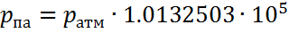

ДавлениеОпределение: Давление — это отношение силы, действующей перпендикулярно поверхности, к площади этой поверхности. Давление — величина скалярная. Единица СИ давления:
Единица, не входящая в СИ: бар = 10 5 Па. Единицы допускавшиеся к применению до 1980 г.:
Если
то Перевод единиц измерения давленияАтмосферы в барДля того чтобы перевести атмосферы в бар воспользуйтесь формулой: Бар в атмосферыДля того чтобы перевести бар в атмосферы воспользуйтесь формулой: Атмосферы в паскалиДля того чтобы перевести атмосферы в паскали воспользуйтесь формулой: Паскаль в атмосферыДля того чтобы перевести паскаль в атмосферы воспользуйтесь формулой:Метр водяного столба в барДля того чтобы перевести метр водяного столба в барвоспользуйтесь формулой: Бар в метр водяного столбаДля того чтобы перевести бар в метр водяного столбавоспользуйтесь формулой:
Метр водяного столба в паскальДля того чтобы перевести метр водяного столба в паскальвоспользуйтесь формулой:
Паскаль в метр водяного столбаДля того чтобы перевести паскаль в метр водяного столбавоспользуйтесь формулой:Бары в паскалиДля того чтобы перевести бары в паскали воспользуйтесь формулой:Паскали в барыДля того чтобы перевести паскали в бары воспользуйтесь формулой:
Миллиметр ртутного столба в паскальДля того чтобы перевести миллиметр ртутного столба в паскальвоспользуйтесь формулой:Паскаль в миллиметр ртутного столбаДля того чтобы перевести паскаль в миллиметр ртутного столбавоспользуйтесь формулой:Миллиметр ртутного столба в барДля того чтобы перевести миллиметр ртутного столба в барвоспользуйтесь формулой: Бар в миллиметр ртутного столбаДля того чтобы перевести бар в миллиметр ртутного столбавоспользуйтесь формулой:Физическая атмосфера в паскальДля того чтобы перевести физическая атмосфера в паскальвоспользуйтесь формулой: Паскаль в физическая атмосфераДля того чтобы перевести паскаль в физическая атмосферавоспользуйтесь формулой: Физическая атмосфера в барДля того чтобы перевести физическая атмосфера в барвоспользуйтесь формулой: Бар в физическая атмосфераДля того чтобы перевести бар в физическая атмосферавоспользуйтесь формулой:
|